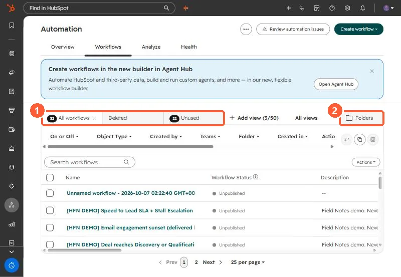

Short answer
From Automation, Workflows, Table actions > Export view downloads the list of workflows in the current view, and inside a workflow File > Export as .PNG saves the diagram. Deleted workflows stay on the Deleted tab for 90 days. Restoring one recreates it as a new, inactive workflow, so turn it back on deliberately. My demo portal shows 32 workflows, 22 of them unused.
1. The workflows list


2. Export
- List: Table actions > Export view downloads the current view. You can also export all workflows in a folder.
- Diagram: open a workflow, then File > Export as .PNG.
3. Restore
Open the Deleted tab, hover the workflow and click Clone. HubSpot recreates it as a new, inactive workflow, so enrollment history does not come back with it. After 90 days it is gone. Workflows used by another active process cannot be deleted until those links are removed. For unused workflows, see workflow health.